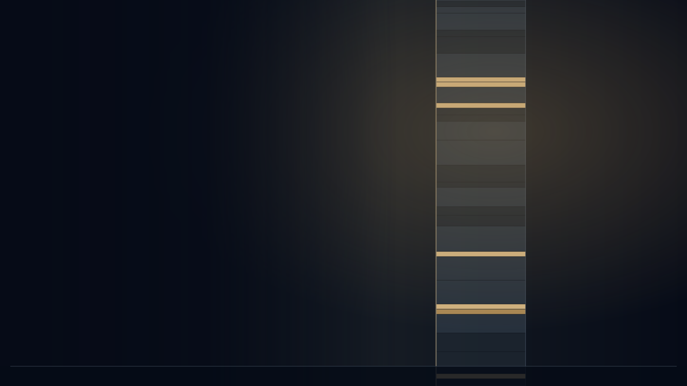
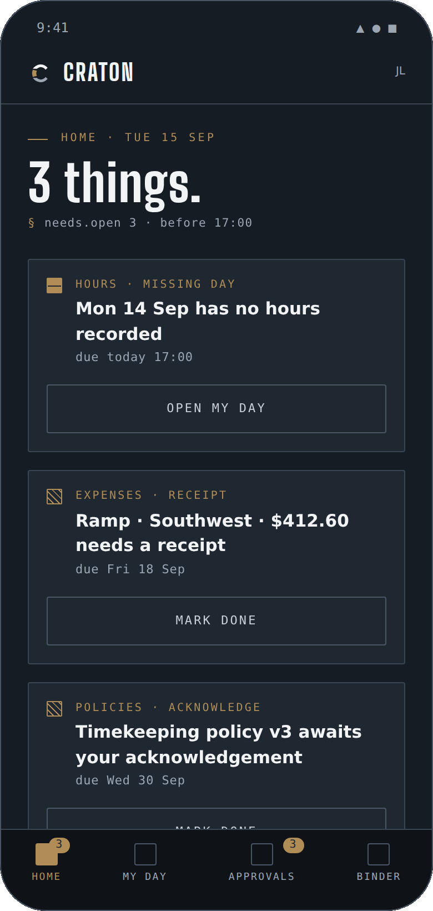
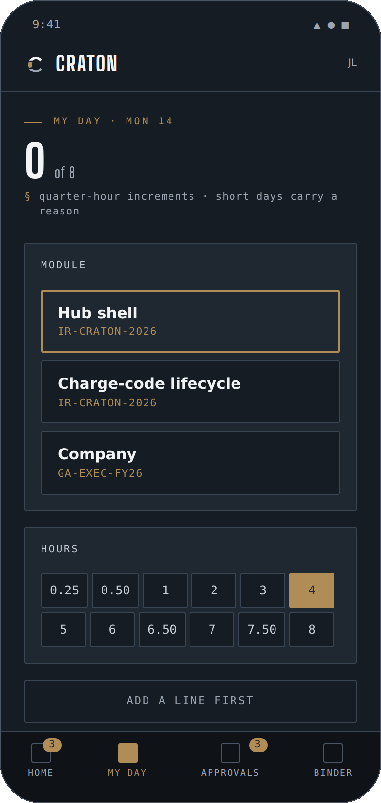
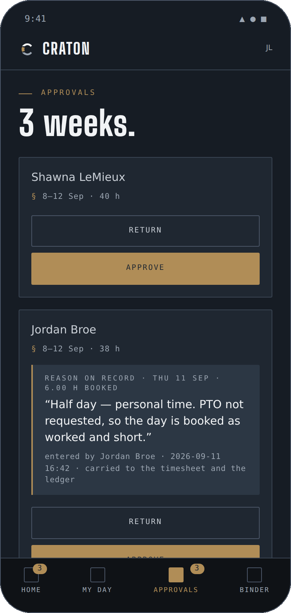
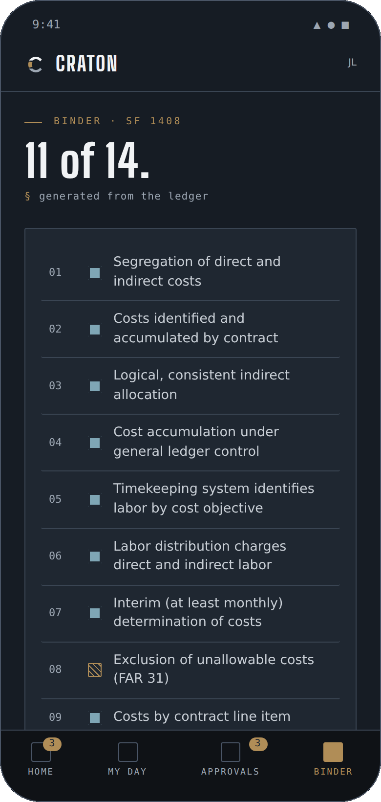
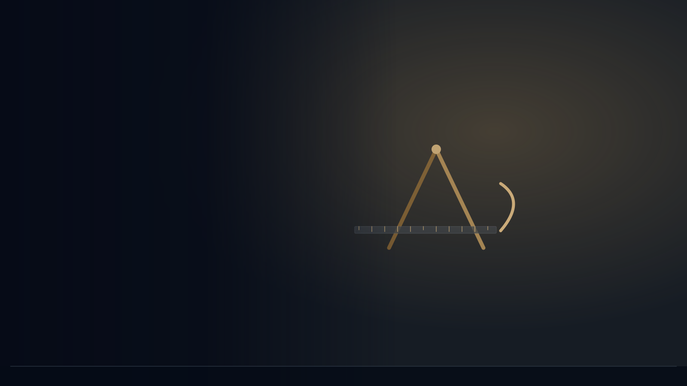

HYPATIUS Enterprise Resource Platform
Nothing to see here. Exactly.
Timekeeping, charge codes, indirect rates and the audit binder for small government contractors. Built to the fourteen areas of the SF 1408, so your review is the least interesting hour of the auditor's week.
sf1408.areas · every area mapped to a ledger query
craton.ledger · append-only · hash chain
timesheet.approve · requester excluded
every AI run: inputs, tools called, outputs
small business · non-traditional defense contractor
What it does
Four plain words. One record.
CRATON keeps the four things a cost-type award asks you to prove, and it keeps them in one ledger anyone can read.
Book the day whole. Eight hours or a written reason. Supervisors approve one person-week at a time; nobody approves their own.
SF 1408 areas 5 & 6 · quarter-hour increments
How timekeeping worksNothing is booked without a code. Names derive from the funding source; tiers pick the approvers; activation writes the ledger account.
6 funding sources · 3 approval tiers
The code lifecycleFringe, overhead and G&A pools that update when the ledger does. Provisional to final, snapshot on the first of every month.
rates.snapshot · fringe, overhead, G&A
How rates are computedFourteen SF 1408 areas generated from the ledger, not assembled the night before. Always current, exportable in one click.
SF 1408 · generated, not assembled
See the fourteenCRATON on a phone · the same ledger
Daily means daily.
A floor check does not ask whether the numbers add up. It asks an employee what they are charging today, and whether they wrote it down today. Four destinations on the phone — the day’s open items, the timesheet, the approvals queue and the binder — writing to the same ledger as the desk, so the record is made where the work is instead of reconstructed on Friday afternoon.
four destinations · quarter-hour increments · no second ledger




Boring, on purpose
Your auditor will be disappointed.
Every hour, code and rate already has a record, so the review takes an hour because there is nothing to find. The joke is about how uneventful compliance becomes. The compliance itself is not a joke.
The record
AI-assisted. Every run reviewable.
AI-assisted analysis with a complete, reviewable record of every run — inputs, tools called, outputs. Rates, floor checks and close notes are drafted by the platform and reviewed by a named person before they count.
Nothing counts until a named person reviews it.
INPUT Q3 indirect pool · 412 rows
TOOLS rate_calc · ceiling_check
OUTPUT provisional fringe 31.4% · 0 exceptions
REVIEWED BY finance@ · 2026-09-15 14:02
LEDGER seq 21,977 · chain ok
One band per area · the lit band is the one that needs a person
craton.binder · read from the ledger, not assembled
SF 1408 · pre-award survey of the accounting system
Fourteen questions. One binder.
The last question on the form is whether the system is in full operation. A compliant package nobody uses fails it. CRATON's home screen is that question, answered daily.
Example tenant · HYPATIUS, today · 11 settled · 2 attention · 1 live
Where it sits
Built for the firms the big systems skip.
Most small contractors start on QuickBooks and bolt on a timekeeping add-on. Most enterprise systems assume a finance department. CRATON assumes eight people and one award.
| Starting point | Who it fits | Time to live | The gap |
|---|---|---|---|
| QuickBooks + timekeeping add-on | Firms under ~$5M | Days | Cannot calculate indirect rates or enforce compliant timekeeping natively; approvals only at the top tier. |
| Mid-market GovCon platform | $5M–$100M revenue | 6–12 weeks | Priced and scoped for a finance team you may not have yet. |
| Enterprise GovCon platform | Large primes | 3–6 months | Runs the top of the market; the implementation alone outlasts a Phase I. |
| CRATON | 1–50 people, non-traditional and small defense contractors | [pending data] | FAR-native from day one, AI-assisted with a reviewable record, and a home screen that says when nothing needs you. |
Sources: bigtime.net (Jul 2026); erpresearch.com (Aug 2026); softwareconnect.com (Jul 2026). Competitors unnamed on the public site by policy; the research board names them.
One company · three platforms
Decide it. Prove it. Account for it.
HYPATIUS builds accountable automation for defense. STARCHITECT runs the mission. ALIDADE finds the gaps. CRATON keeps the record.

Request a walkthrough
Make your next audit the dullest hour of the year.
Forty minutes with the team that built it. Bring your last SF 1408 or your first.
Request a walkthroughor email hello@hypati.us